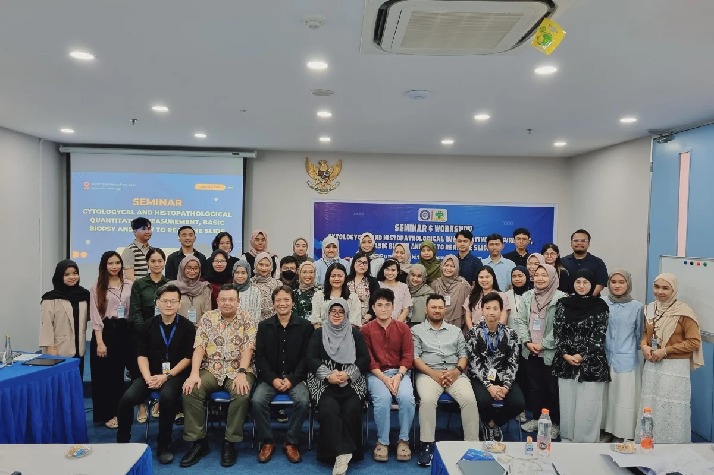

Home
Struktur Organisasi
Layanan Umum
Visi, Misi & Tujuan
Login
Struktur Organisasi RSHP
Berikut adalah contoh struktur organisasi RSHP:

Jabatan
Nama
Tugas Utama
Direktur
drh. A
Strategi & kebijakan
Wakil Direktur
drh. B
Mutu layanan
Kepala Rawat Jalan
drh. C
Koordinasi poliklinik
© 2025 RSHP (Website statis tugas Modul 1) | Sumber:
RSHP Unair